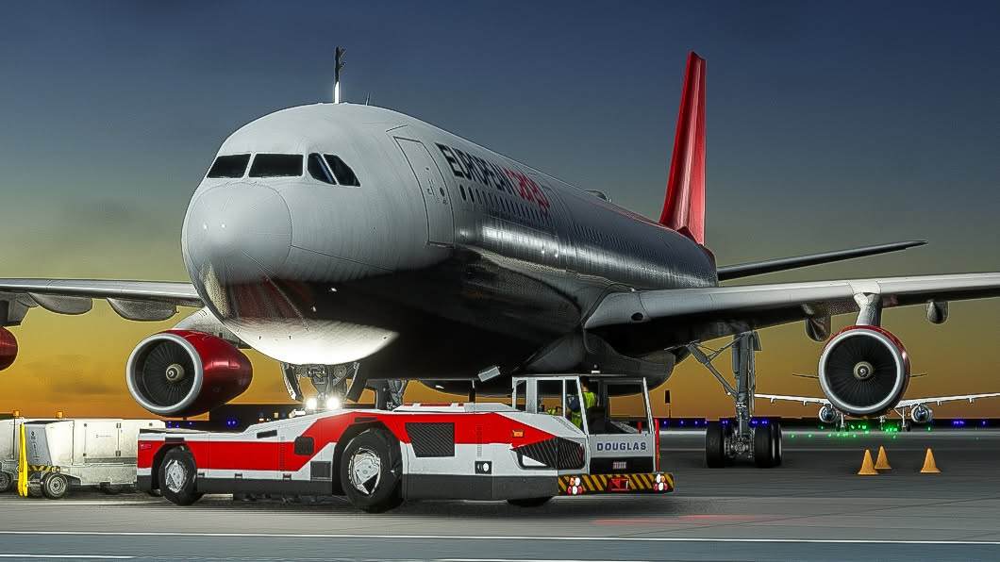
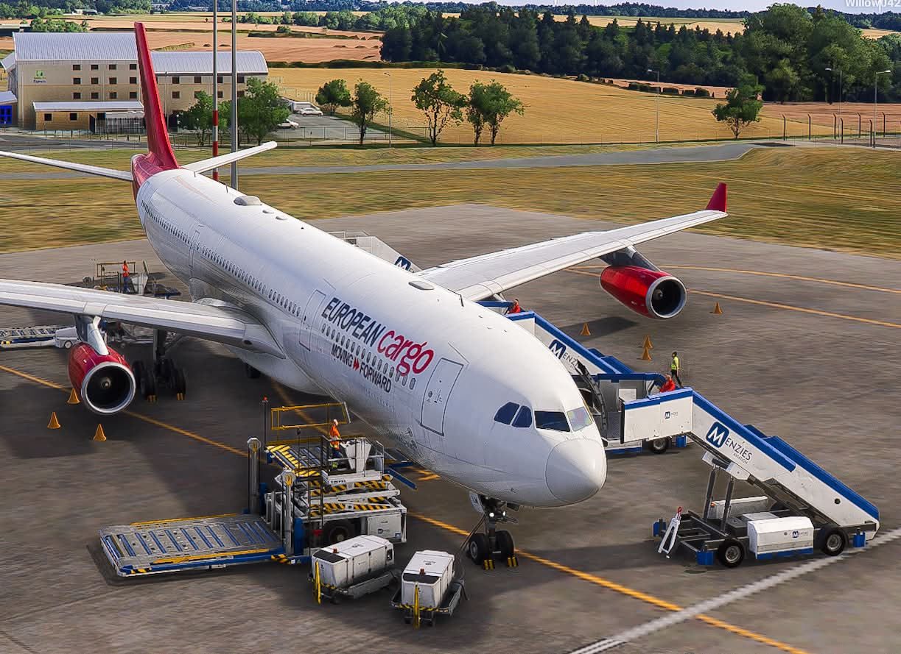

European Cargo Virtual · Flight simulation
CARGO
WITHOUT
BORDERS.
Heavy lift. Long haul. Moving forward.
01 / Moving forward
A DIFFERENT
KIND OF JOURNEY.
Beyond the passenger terminal, there’s a whole world to move.
European Cargo Virtual brings the scale, precision and character of air freight to your simulator. From a carefully planned departure to the last mile of a long-haul arrival, every flight has a purpose.
Part of the British Midland Group and led by owner Dylan, with a cargo identity all of its own.
Meet European Cargo
02 / The operation
PRECISION ON
THE GROUND.
PURPOSE IN THE AIR.
Cargo flying begins before pushback. Prepare your SimBrief plan, review your dispatch briefing and record your sector with British Midland Group ACARS.
Our approach to operations03 / The network
EUROPE AT HEART.
THE WORLD AHEAD.
Explore a cargo network shaped around long-haul missions and the airports that make them possible.
Fly from Cardiff, Bournemouth, Birmingham and Teesside to destinations in China and Austria.
Explore the network4 UK hubs · 5 international destinations
28 scheduled sectors

04 / Our fleet
FOUR ENGINES.
ONE PURPOSE.
The Airbus A340 gives European Cargo Virtual its unmistakable profile. Explore our ten-aircraft roster: A340-600, A340-600F and A340-500, flown in Microsoft Flight Simulator 2024.
Discover the A340Fleet and schedule figures supplied by the team. Pilot counts, completed flights and cargo totals: TBA.
Your next chapter
THE NEXT FLIGHT.
YOUR FLIGHT.
Bring your passion for simulation to a community built around cargo flying.
Join European Cargo